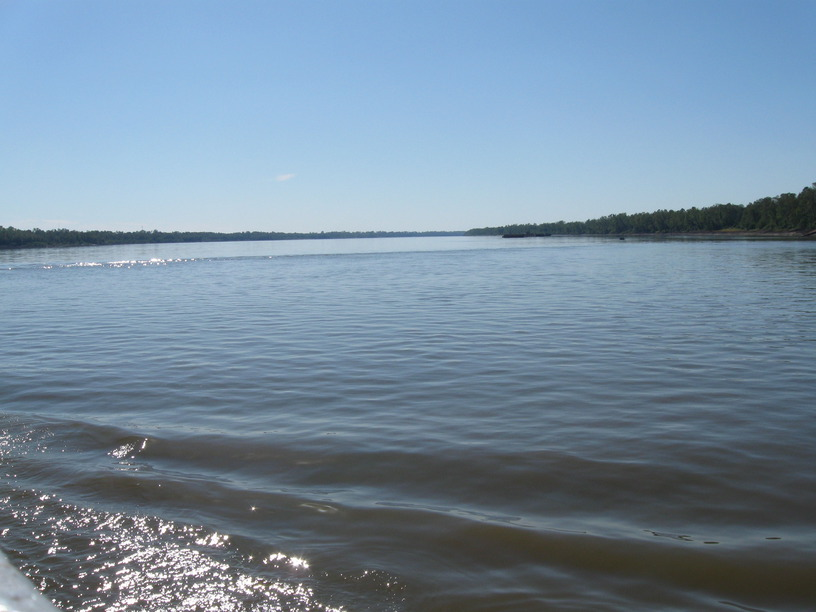
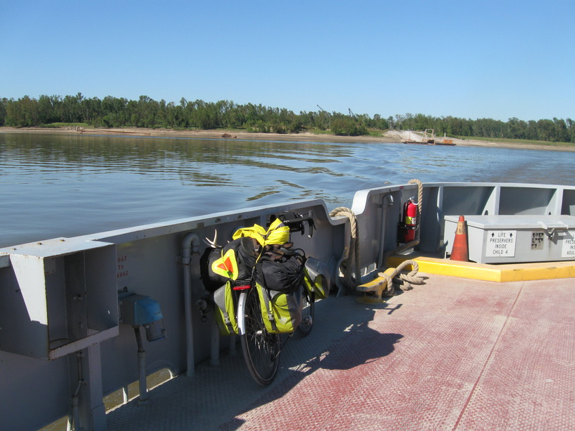

25 Oct 2008, Morganza, LA
Another exciting day on the road. Spent ~1 1/2 hrs at the food pantry this morning. Met some more very kind people. I helped to pack boxes which people were receiving. I was of course prayed for before I left.
Around 1 I rolled into St. Francisville, looking for a place to get lunch. I pulled up to the Magnolia Cafe & before I could get off my bike someone was asking me about my trip & offering to buy me lunch. That someone was Ron, along with his wife Vicky & her sister Cathy. I of course took them up on their offer. Ron's son Pierce has done a lot of touring & he called him & we talked briefly about our respective trips. We had good conversation through lunch, and Ron managed to find me a place to spend the night with a friend of a friend, Doolie Neal.
After leaving lunch I rode through the historic part of town, which had many beautiful antebellum houses, then headed for the ferry. When the ferry came across & unloaded, three cyclists rode off. We chatted quickly—they were riding the Southern Tier eastward, having started 9/7/08 in San Diego.
Then I crossed the Mississippi River on the ferry, and as I rode out I ran into Ben & Meg again. We caught up on the past 24 hours, then parted ways again. Not much later I met another eastbound cyclist on the Southern Tier, Bob. Bob was raising money for Habitat 4 Humanity, and visiting 10 sites along the way. We have a lot in common—both engineers who have dabbled in other fields & found ourselves thinking, "I don't know what I want to do. Maybe I'll bike across the country." The good news he told me is that much of Texas has prevailing winds out of the east, because of the Gulf, so I may in fact have more tailwinds than headwinds! :-)
Tomorrow I'm going to try for a 100+ mile day, so it's early to bed for me.

